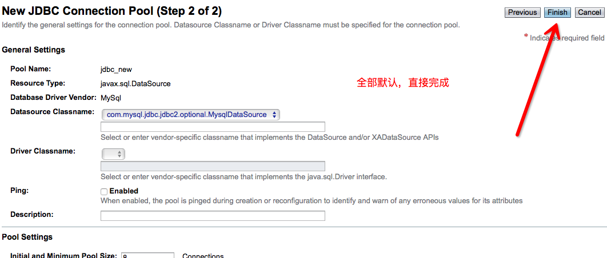

<!doctype html>
<html lang="zh-CN">
<head><meta name="generator" content="Hexo 3.9.0">
    <meta charset="UTF-8">
    <meta http-equiv="X-UA-Compatible" content="IE=11,IE=10,IE=9,IE=8">
    <meta name="baidu-site-verification" content="dIcXMeY8Ya">
    
    <title>GlassFish配置数据库连接池 | 小牛试一刀</title>
    <meta name="viewport" content="width=device-width, initial-scale=1, maximum-scale=1, user-scalable=0">
    <meta name="keywords" content="Anthony, 刘经济, 技术博客">
    <meta name="description" content="待人以儒墨，不热爱前端技术的后端开发不是一个好的吃货。">

    
    <link rel="alternative" href="/atom.xml" title="小牛试一刀" type="application/atom+xml">
    
    
    <link rel="shortcut icon" href="/favicon.ico">
    
    <link rel="stylesheet" href="/css/style.css">
    <!--[if lt IE 9]>
    <script src="/js/html5.js"></script>
    <![endif]-->
    
<script>
var _hmt = _hmt || [];
(function() {
  var hm = document.createElement("script");
  hm.src = "https://hm.baidu.com/hm.js?d5ebf515ab530cfbdda5f5c85093fb41";
  var s = document.getElementsByTagName("script")[0]; 
  s.parentNode.insertBefore(hm, s);
})();
</script>


</head>
</html>
<body class="home">
    <!--[if lt IE 9]>
    <div class="browsehappy">
        当前网页 <strong>不支持</strong>
        你正在使用的浏览器. 为了正常的访问, 请 <a href="http://browsehappy.com/">升级你的浏览器</a>.
    </div>
    <![endif]-->

    <!-- 博客头部 -->
    <header class="header">
    <section class="container header-main">
        <div class="logo">
            <a href="/">
                <div class="cover">
                    <span class="name">小牛试一刀</span>
                    <span class="description">斯人笔记本</span>
                </div>
            </a>
        </div>
        <div class="dropnav icon-paragraph-justify" id="JELON__btnDropNav"></div>
        <ul class="menu hidden" id="JELON__menu">
            
            <li rel="/posts/88376848.html" class="item ">
                <a href="/" title="首页" class="icon-home">&nbsp;首页</a>
            </li>
            
            <li rel="/posts/88376848.html" class="item ">
                <a href="/about/" title="关于" class="icon-about">&nbsp;关于</a>
            </li>
            
            <li rel="/posts/88376848.html" class="item ">
                <a href="/comment/" title="留言" class="icon-comment">&nbsp;留言</a>
            </li>
            
        </ul>
        <div class="profile clearfix">
            <div class="feeds fl">
                
                
                <p class="links">
                    
                        <a href="https://github.com/haowanxing" target="_blank">Github</a>
                        |
                    
                        <a href="https://pages.coding.me" target="_blank">Hosted by Coding Pages</a>
                        
                    
                </p>
                <p class="sns">
                    
                        <a href="http://weibo.com/u/2214092525" class="sinaweibo" target="_blank"><b>■</b> 新浪微博</a>
                    
                        <a href="https://www.facebook.com/york.mail/" class="qqweibo" target="_blank"><b>■</b> Facebook</a>
                    
                    <a href="javascript: void(0);" class="wechat">
                        <b>■</b>
                        公众号
                        <span class="popover">
                            
                            <i class="arrow"></i>
                        </span>
                    </a>
                </p>
                
            </div>
            <div class="avatar fr">
                
            </div>
        </div>
    </section>
</header>


    <!-- 博客正文 -->
    <div class="container body clearfix">
        <section class="content">
            <div class="content-main widget">
                <!-- 文章页 -->
<!-- 文章 -->
<article class="post article">
    <header class="text-center">
        <h3 class="post-title"><span>GlassFish配置数据库连接池</span></h3>
    </header>
    <p class="post-meta text-center">
         发表于
        <time datetime="2015-11-08T06:31:38.000Z">2015-11-08 14:31:38</time>

        <!-- 不蒜子统计 -->
        <span id="busuanzi_container_page_pv" style='display:none'">
              <i class="icon-smile icon"></i> 阅读数：<span id="busuanzi_value_page_pv"></span>次
        </span>


    </p>
    <div class="post-content">
        <h2 id="1、首先启动glassfish服务器，在地址栏中输入http-localhost-4848-进入服务器的配置界面-如下"><a href="#1、首先启动glassfish服务器，在地址栏中输入http-localhost-4848-进入服务器的配置界面-如下" class="headerlink" title="1、首先启动glassfish服务器，在地址栏中输入http://localhost:4848/,进入服务器的配置界面,如下:"></a>1、首先启动glassfish服务器，在地址栏中输入<a href="http://localhost:4848/" target="_blank" rel="noopener">http://localhost:4848/</a>,进入服务器的配置界面,如下:</h2><p></p>
<h2 id="2、在Common-Tasks下选择Resources的JDBC，可以看到JDBC资源-JDBC-Resources-和Connection-Pools-连接池-，在Connection-Pools-连接池-中点击New按钮，建立一个连接池jdbc-new，如下："><a href="#2、在Common-Tasks下选择Resources的JDBC，可以看到JDBC资源-JDBC-Resources-和Connection-Pools-连接池-，在Connection-Pools-连接池-中点击New按钮，建立一个连接池jdbc-new，如下：" class="headerlink" title="2、在Common Tasks下选择Resources的JDBC，可以看到JDBC资源(JDBC Resources)和Connection Pools(连接池)，在Connection Pools(连接池)中点击New按钮，建立一个连接池jdbc_new，如下："></a>2、在Common Tasks下选择Resources的JDBC，可以看到JDBC资源(JDBC Resources)和Connection Pools(连接池)，在Connection Pools(连接池)中点击New按钮，建立一个连接池jdbc_new，如下：</h2><a id="more"></a>
<p></p>
<h3 id="配置基本信息，如下："><a href="#配置基本信息，如下：" class="headerlink" title="配置基本信息，如下："></a>配置基本信息，如下：</h3><p></p>
<h3 id="Next后的第二步："><a href="#Next后的第二步：" class="headerlink" title="Next后的第二步："></a>Next后的第二步：</h3><p></p>
<h3 id="Finish之后进入刚刚配置的jdbc-new选择附加配置-如图配置相关数据："><a href="#Finish之后进入刚刚配置的jdbc-new选择附加配置-如图配置相关数据：" class="headerlink" title="Finish之后进入刚刚配置的jdbc_new选择附加配置,如图配置相关数据："></a>Finish之后进入刚刚配置的jdbc_new选择附加配置,如图配置相关数据：</h3><p></p>
<h2 id="3、配置完成之后，回到之前的General中测试Ping"><a href="#3、配置完成之后，回到之前的General中测试Ping" class="headerlink" title="3、配置完成之后，回到之前的General中测试Ping:"></a>3、配置完成之后，回到之前的General中测试Ping:</h2><p></p>
<p>注意：如果此时出现<strong>javax.resource.ResourceException: Class name is wrong orclasspath is not set for : com.mysql.jdbc.jdbc2.optional.MysqlDataSource</strong>这个错误时候，是因为没有把mysql驱动包mysql-connector-java-5.1.20-bin.jar放入glassfish安装目录domains\domain1\lib\ext下；</p>
<p>解决方法：把mysql驱动包mysql-connector-java-5.1.20-bin.jar放入glassfish安装目录domains\domain1\lib\ext下并重新启动glassfish服务器就可以了。</p>
<h2 id="4、创建连接池成功之后，点击JDBC-Resources，在JDBC资源的配置界面中，Pool-Name-连接池名称-就会出现刚配置成功的连接池jdbc-new-其配置界面如下："><a href="#4、创建连接池成功之后，点击JDBC-Resources，在JDBC资源的配置界面中，Pool-Name-连接池名称-就会出现刚配置成功的连接池jdbc-new-其配置界面如下：" class="headerlink" title="4、创建连接池成功之后，点击JDBC Resources，在JDBC资源的配置界面中，Pool  Name(连接池名称)就会出现刚配置成功的连接池jdbc_new,其配置界面如下："></a>4、创建连接池成功之后，点击JDBC Resources，在JDBC资源的配置界面中，Pool  Name(连接池名称)就会出现刚配置成功的连接池jdbc_new,其配置界面如下：</h2><p></p>
<p></p>
<h2 id="5、在配置界面的JNDI-Name中配置JNDI的名字为jdbc-test-这个名字可以自己取-至此，连接池和数据源都以配置完成。"><a href="#5、在配置界面的JNDI-Name中配置JNDI的名字为jdbc-test-这个名字可以自己取-至此，连接池和数据源都以配置完成。" class="headerlink" title="5、在配置界面的JNDI Name中配置JNDI的名字为jdbc/test(这个名字可以自己取).至此，连接池和数据源都以配置完成。"></a>5、在配置界面的JNDI Name中配置JNDI的名字为jdbc/test(这个名字可以自己取).至此，连接池和数据源都以配置完成。</h2><p>相关配置到这里就完成了，我们还需要做一个事情，那就是，测试。</p>
<h2 id="6、测试连接数据库是否成功："><a href="#6、测试连接数据库是否成功：" class="headerlink" title="6、测试连接数据库是否成功："></a>6、测试连接数据库是否成功：</h2><p>我们在Jave Web 项目中新建一个jsp页面来测试，代码如下：</p>
<p><pre lang="java"><br>&lt;%–<br>    Document   : jdbc_test<br>    Created on : 2015-11-8, 13:24:37<br>    Author     : 刘经济 <a href="&#x6d;&#97;&#x69;&#x6c;&#x74;&#x6f;&#x3a;&#x79;&#111;&#x72;&#x6b;&#95;&#109;&#97;&#x69;&#108;&#64;&#x71;&#x71;&#x2e;&#99;&#x6f;&#109;">&#x79;&#111;&#x72;&#x6b;&#95;&#109;&#97;&#x69;&#108;&#64;&#x71;&#x71;&#x2e;&#99;&#x6f;&#109;</a><br>–%&gt;<br>&lt;%@page contentType=”text/html” pageEncoding=”UTF-8”%&gt;<br>&lt;%@ page import=”javax.naming.<em>“ %&gt;<br>&lt;%@ page import=”javax.sql.</em>“ %&gt;<br>&lt;%@ page import=”java.sql.*” %&gt;</pre></p>
<p><html><br>    <head><meta name="generator" content="Hexo 3.9.0"><br>        <title>测试GlassFish配置的Mysql数据库连接池</title><br>    </head><br>    <body></body></html></p>
<h1 id="下面是测试结果："><a href="#下面是测试结果：" class="headerlink" title="下面是测试结果："></a>下面是测试结果：</h1><pre><code>&lt;%
    Connection conn = null;
    Statement stmt = null;
    ResultSet rs = null;
    ResultSetMetaData md = null;
    try {
        Context initCtx = new InitialContext();
        DataSource ds = (DataSource) initCtx.lookup(&quot;jdbc/test&quot;);
        if (ds != null) {
            out.println(&quot;已经获得DataSource连接
</code></pre><p>“);<br>                    out.println(“资源ID: “ + ds.toString() + “<br>“);<br>                    conn = ds.getConnection();<br>                    stmt = conn.createStatement();<br>                    out.println(“从DataSource获取Connection成功!</p>
<p>“);<br>                    rs = stmt.executeQuery(“select * from admins”);<br>                    md = rs.getMetaData();<br>                    out.println(“<table border="1" width="80%" align="center" bgcolor="#ffdddd">“);<br>                    out.println(“<tr>“);<br>                    for (int i = 0; i &lt; md.getColumnCount(); i++) {<br>                        out.println(“<td>“ + md.getColumnName(i + 1) + “</td>“);<br>                    }<br>                    while (rs.next()) {<br>                        out.println(“</tr><tr>“);<br>                        out.println(“<td>“ + rs.getString(1) + “</td>“);<br>                        out.println(“<td>“ + rs.getString(2) + “</td>“);<br>                        out.println(“<td>“ + rs.getString(3) + “</td>“);<br>                        out.println(“<td>“ + rs.getString(4) + “</td>“);<br>                        out.println(“</tr>“);<br>                    }<br>                    out.println(“</table>“);<br>                    conn.close();<br>                    out.println(“</p><p>关闭连接..<br>“);<br>                }<br>            } catch (Exception e) {<br>                out.println(“</p>
<p>出现异常..<br>“);<br>                out.println(e.toString());<br>            }<br>        %&gt;<br>    <br><br><br>&nbsp;</p>
<h2 id="7、我们的测试结果："><a href="#7、我们的测试结果：" class="headerlink" title="7、我们的测试结果："></a>7、我们的测试结果：</h2><p></p>

    </div>
    <p class="post-meta">
        <span class="post-cat">分类：
            <a class="cat-link" href="/categories/Web/">Web</a>
        </span>
        <span class="post-tags">
            标签：
            
    
        <a href="/tags/MySQL/" title="MySQL">MySQL</a> / 
    
        <a href="/tags/Glassfish/" title="Glassfish">Glassfish</a> / 
    
        <a href="/tags/Java/" title="Java">Java</a>
    

        </span>
    </p>
</article>
<!-- 分享按钮 -->

  <div class="article-share clearfix text-center">
    <div class="share-area">
      <span class="share-txt">分享到：</span>
      <a href="javascript: window.open('http://service.weibo.com/share/share.php?url=' + encodeURIComponent(location.href) + '&title=' + document.title + '&language=zh_cn');" class="share-icon weibo"></a>
      <a href="javascript: alert('请复制链接到微信并发送');" class="share-icon wechat"></a>
      <a href="javascript: window.open('http://sns.qzone.qq.com/cgi-bin/qzshare/cgi_qzshare_onekey?url=' + encodeURIComponent(location.href) + '&title=' + document.title);" class="share-icon qqzone"></a>
      <a href="javascript: window.open('http://connect.qq.com/widget/shareqq/index.html?url=' + encodeURIComponent(location.href) + '&desc=imsry.cn个人博客&title=' + document.title + '&callback=' + encodeURIComponent(location.href));" class="share-icon qq"></a>
      <a href="javascript: window.open('http://shuo.douban.com/!service/share?href=' + encodeURIComponent(location.href) + '&name=' + document.title + '&text=' + document.title);" class="share-icon douban"></a>
    </div>
  </div>


<!-- 上一篇/下一篇 -->

<div class="article-nav clearfix">
    
    <span class="prev fl">
        上一篇<br >
        <a href="/posts/2e6f46f8.html">
            
                 CENTOS 6.0 iptables 开放端口80 3306 22端口
            
        </a>
    </span>
    

    
    <span class="next fr">
        下一篇<br >
        <a href="/posts/14dc73fd.html">
            
                分享一个PHP修改ini配置文件的类
            
        </a>
    </span>
    
</div>

<!-- 文章评论 -->

  <script src="/js/comment.js"></script>
  <div id="comments" class="comment">
    <!--
    <div class="sign-bar">
      GitHub 已登录!
      <span class="sign-link">登出</span>
    </div>
    <section class="box">
      <div class="com-avatar"></div>
      <div class="com-text">
        <div class="main">
          <textarea class="text-area-edited show" placeholder="欢迎评论！"></textarea>
          <div class="text-area-preview"></div>
        </div>
        <div class="switch">
          <div class="switch-item on">编辑</div>
          <div class="switch-item">预览</div>
        </div>
        <div class="button">提交</div>
      </div>
    </section>
    <section class="tips">注：评论支持 markdown 语法！</section>
    <section class="list-wrap">
      <ul class="list">
        <li>
          <div class="user-avatar">
            <a href="/">
              
            </a>
          </div>
          <div class="user-comment">
            <div class="user-comment-header">
              <span class="post-name">张德龙</span>
              <span class="post-time">2017年12月12日</span>
              <span class="like liked">已赞</span>
              <span class="like-num">2</span>
            </div>
            <div class="user-comment-body">333333</div>
          </div>
        </li>
        <li>
          <div class="user-avatar">
            <a href="/">
              
            </a>
          </div>
          <div class="user-comment">
            <div class="user-comment-header">
              <span class="post-name">刘德华</span>
              <span class="post-time">2017年12月12日</span>
              <span class="like">点赞</span>
              <span class="like-num">2</span>
            </div>
            <div class="user-comment-body">vvvvv</div>
          </div>
        </li>
      </ul>
      <div class="page-nav">
        <a href="javascript: void(0);" class="item">1</a>
        <a href="javascript: void(0);" class="item">2</a>
        <a href="javascript: void(0);" class="item current">3</a>
      </div>
    </section>
    -->
  </div>
  <script>
  JELON.Comment({
    container: 'comments',
    label: 'glassfish-connection-pools' || 'posts/88376848.html',
    owner: 'haowanxing',
    repo: 'haowanxing.github.io',
    clientId: '7e6b078394a99b7940d2',
    clientSecret: 'ff64a6b066e97af64358c44a96e0c7dd398aba1e'
  });
  </script>


            </div>

        </section>
        <!-- 侧栏部分 -->
<aside class="sidebar">
    
    <section class="widget">
        <h3 class="widget-hd"><strong>文章搜索</strong></h3>
        <div class="search-form">
  <form
    id="searchForm"
    method="GET"
    action="https://www.baidu.com/s"
    ectype="application/x-www-form-urlencoded"
    target="_blank"
    autocomplete="false"
    onsubmit="javascript: return false;">
    <input
      id="searchKeyword"
      type="text"
      class="form-control"
      placeholder="输入关键字搜索"
      autocomplete="false"
    />
    <input id="searchKeywordHidden" type="hidden" name="wd" />
    <input id="searchButton" class="btn" type="submit" value="搜索" />
  </form>
</div>
    </section>
    

    <section class="widget">
        <h3 class="widget-hd"><strong>文章分类</strong></h3>
        <!-- 文章分类 -->
<ul class="widget-bd">
    
    <li>
        <a href="/categories/学习笔记/">学习笔记</a>
        <span class="badge">(48)</span>
    </li>
    
    <li>
        <a href="/categories/编程语言/">编程语言</a>
        <span class="badge">(6)</span>
    </li>
    
    <li>
        <a href="/categories/杂谈/">杂谈</a>
        <span class="badge">(4)</span>
    </li>
    
    <li>
        <a href="/categories/Learn-GO/">Learn-GO</a>
        <span class="badge">(6)</span>
    </li>
    
    <li>
        <a href="/categories/算法/">算法</a>
        <span class="badge">(6)</span>
    </li>
    
    <li>
        <a href="/categories/开发板/">开发板</a>
        <span class="badge">(1)</span>
    </li>
    
    <li>
        <a href="/categories/Linux/">Linux</a>
        <span class="badge">(15)</span>
    </li>
    
    <li>
        <a href="/categories/PHP/">PHP</a>
        <span class="badge">(9)</span>
    </li>
    
    <li>
        <a href="/categories/网络安全/">网络安全</a>
        <span class="badge">(2)</span>
    </li>
    
    <li>
        <a href="/categories/数据库/">数据库</a>
        <span class="badge">(2)</span>
    </li>
    
    <li>
        <a href="/categories/MacOS/">MacOS</a>
        <span class="badge">(1)</span>
    </li>
    
    <li>
        <a href="/categories/Web/">Web</a>
        <span class="badge">(2)</span>
    </li>
    
    <li>
        <a href="/categories/我的分享/">我的分享</a>
        <span class="badge">(1)</span>
    </li>
    
    <li>
        <a href="/categories/开放平台/">开放平台</a>
        <span class="badge">(1)</span>
    </li>
    
    <li>
        <a href="/categories/考试/">考试</a>
        <span class="badge">(1)</span>
    </li>
    
    <li>
        <a href="/categories/游戏/">游戏</a>
        <span class="badge">(2)</span>
    </li>
    
    <li>
        <a href="/categories/学习笔记/Linux/">Linux</a>
        <span class="badge">(1)</span>
    </li>
    
</ul>
    </section>

    
    <section class="widget">
        <h3 class="widget-hd"><strong>热门标签</strong></h3>
        <!-- 文章标签 -->
<div class="widget-bd tag-wrap">
  
    <a class="tag-item" href="/tags/Docker/" title="Docker">Docker (1)</a>
  
    <a class="tag-item" href="/tags/Golang/" title="Golang">Golang (1)</a>
  
    <a class="tag-item" href="/tags/LNMP/" title="LNMP">LNMP (2)</a>
  
    <a class="tag-item" href="/tags/OrangePi/" title="OrangePi">OrangePi (1)</a>
  
    <a class="tag-item" href="/tags/Network/" title="Network">Network (3)</a>
  
    <a class="tag-item" href="/tags/网卡/" title="网卡">网卡 (1)</a>
  
    <a class="tag-item" href="/tags/PHP/" title="PHP">PHP (11)</a>
  
    <a class="tag-item" href="/tags/算法/" title="算法">算法 (1)</a>
  
    <a class="tag-item" href="/tags/时间复杂度/" title="时间复杂度">时间复杂度 (1)</a>
  
    <a class="tag-item" href="/tags/定理/" title="定理">定理 (1)</a>
  
    <a class="tag-item" href="/tags/Go/" title="Go">Go (1)</a>
  
    <a class="tag-item" href="/tags/gRPC/" title="gRPC">gRPC (1)</a>
  
    <a class="tag-item" href="/tags/RPC/" title="RPC">RPC (1)</a>
  
    <a class="tag-item" href="/tags/Apache/" title="Apache">Apache (4)</a>
  
    <a class="tag-item" href="/tags/Linux/" title="Linux">Linux (3)</a>
  
    <a class="tag-item" href="/tags/Proxy/" title="Proxy">Proxy (1)</a>
  
    <a class="tag-item" href="/tags/面试/" title="面试">面试 (1)</a>
  
    <a class="tag-item" href="/tags/firewall/" title="firewall">firewall (1)</a>
  
    <a class="tag-item" href="/tags/CentOS/" title="CentOS">CentOS (3)</a>
  
    <a class="tag-item" href="/tags/https/" title="https">https (1)</a>
  
    <a class="tag-item" href="/tags/Chrome/" title="Chrome">Chrome (1)</a>
  
    <a class="tag-item" href="/tags/性能/" title="性能">性能 (3)</a>
  
    <a class="tag-item" href="/tags/VPN/" title="VPN">VPN (1)</a>
  
    <a class="tag-item" href="/tags/DS-Store/" title=".DS_Store">.DS_Store (1)</a>
  
    <a class="tag-item" href="/tags/Discuz/" title="Discuz">Discuz (1)</a>
  
    <a class="tag-item" href="/tags/MySQL/" title="MySQL">MySQL (9)</a>
  
    <a class="tag-item" href="/tags/Glassfish/" title="Glassfish">Glassfish (1)</a>
  
    <a class="tag-item" href="/tags/Java/" title="Java">Java (2)</a>
  
    <a class="tag-item" href="/tags/C语言/" title="C语言">C语言 (1)</a>
  
    <a class="tag-item" href="/tags/html/" title="html">html (1)</a>
  
    <a class="tag-item" href="/tags/Javascript/" title="Javascript">Javascript (2)</a>
  
    <a class="tag-item" href="/tags/Laravel/" title="Laravel">Laravel (1)</a>
  
    <a class="tag-item" href="/tags/MarkDown/" title="MarkDown">MarkDown (1)</a>
  
    <a class="tag-item" href="/tags/数据结构/" title="数据结构">数据结构 (1)</a>
  
    <a class="tag-item" href="/tags/Vim/" title="Vim">Vim (1)</a>
  
    <a class="tag-item" href="/tags/LAMP/" title="LAMP">LAMP (1)</a>
  
    <a class="tag-item" href="/tags/MacOS/" title="MacOS">MacOS (4)</a>
  
    <a class="tag-item" href="/tags/php/" title="php">php (2)</a>
  
    <a class="tag-item" href="/tags/Git/" title="Git">Git (1)</a>
  
</div>
    </section>
    

    

    
    <!-- 友情链接 -->
    <section class="widget">
        <h3 class="widget-hd"><strong>友情链接</strong></h3>
        <!-- 文章分类 -->
<ul class="widget-bd">
    
        <li>
            <a href="https://imququ.com/" target="_blank" title="Jerry Qu">Jerry Qu</a>
        </li>
    
        <li>
            <a href="https://jelon.info/" target="_blank" title="Zhang Delong">Jelon</a>
        </li>
    
</ul>

    </section>
    
</aside>
<!-- / 侧栏部分 -->
    </div>

    <!-- 博客底部 -->
    <footer class="footer">
<div style="margin-bottom:1em;">

        <!-- 不蒜子统计 -->
        <span id="busuanzi_container_site_pv">
                本站总访问量<span id="busuanzi_value_site_pv"></span>次
        </span>
        <span class="post-meta-divider">|</span>
        <span id="busuanzi_container_site_uv" style='display:none'>
                本站访客数<span id="busuanzi_value_site_uv"></span>人
        </span>
        <script async src="//busuanzi.ibruce.info/busuanzi/2.3/busuanzi.pure.mini.js"></script>
  
</div>
    &copy;
    
        2014-2020
    

    <a href="/">Best Wishes</a>
</footer>
<div class="back-to-top" id="JELON__backToTop" title="返回顶部">返回顶部</div>

    <!--博客js脚本 -->
    <!-- 这里放网站js脚本 -->
<script src="/js/main.js?v=1591351449950"></script>
</body>
</html>